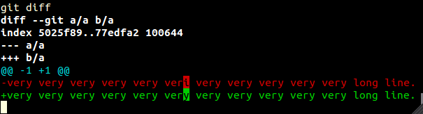

Git Version Control Tutorial
- Why learn Git
- How to learn Git
- Base concepts
- Setup
- init
- Create version
- status
- Working tree
- Index
- Staged
- ls-files
- Binary files
- blame
- gitignore
- gitfile
- mailmap
- add
- rm
- Remove file from repo history
- clean
- mv
- reset
- reflog
- fsck
- revert
- commit
- shortlog
- describe
- show
- notes
- gitk
- Revision
- difftool
- tag
- branch
- check-ref-format
- checkout
- bisect
- bisect run
- stash
- for-each-ref
- merge
- merge-file
- merge-base
- mergetool
- Email patches
- archive
- ls-remote
- Protocols
- HTTP
- SSH protocol
- Git protocol
- Authentication
- bare
- pull
- Permissions
- File permissions
- Empty directories
- replace
- filter-branch
- rerere
- hooks
- rev-parse
- rev-list
- var
- gitattributes
- gc
- Plumbing
- Porcelain
- git options
- contrib
- Third party tools
- Implementations
- Test repos
New multi-file organization being built:
- Basic commands
- Less basic
- Email patches
- Internals
- Git source code
- Web interfaces
- Other version control systems
Why learn Git
Git + GitHub allows you to do the following quickly:
-
create multiple versions (commits or revisions in Git jargon) of your work, and travel between them.
This is useful for:
-
backup. If you delete a file by mistake, and the file was present in some past version, you can recover it.
-
if a recent modification made a change that made things worse, you can just go back to a previous correct state and see what happened.
-
refer to a specific version.
Say you are writting a book, and you made a session called “motivation”.
Other people liked it, and said, look at the motivation section!
But one day, you decide that the motivation section should be called “advantages” instead.
But then this breakes the references of other people…
But not if the other person said: look at the “motivation” section of version XXX!
-
you are working on a feature, when something more urgent comes up.
The current state may not be stable, and may interfere with the more urgent state.
No problem, make a version of your current work to save it, and switch to the more urgent matter.
When you are done, just switch back.
-
View differences between versions.
It is easy to view differences between versions to find out what was different on a different version
This is useful when:
-
why was my program working then, but stopped working?
-
what changes exactly did someone else made to my files and wants me to accept?
-
There are many commands that deal with versions, but you should first learn:
git add,git rmandgit mvdecide which files to include on the next versiongit commitcreates versionsgit checkoutmoves between versionsgit branchdeals with version names
-
-
Upload your work to a server to:
- back it up
- publish it
The main command to do those things is
git push. -
Download something someone else made public.
git cloneis the way to go. -
Work in groups.
Because of all its capacities, git is widely used in group projects. It was created for the Linux kernel.
This means that:
-
you can make a very large project that need many people to work on the same code.
-
you can learn from others.
-
if you make a good work, you will get more famous, and will have better jobs.
For open source, this also means that:
- you can make modifications that you need to the program you use.
-
How to learn Git
Git is hard to learn at first because
-
it has inner state that is not obvious at first to visualize.
-
concepts depend on one another egg and chicken style.
To learn it:
-
make a bunch of standard test repos, copy them out, and test away.
Use the standard repos generated in [test repos]
-
visualize everything the commit tree whenever you don’t know what is going on.
Once you see the tree, and how to modify it, everything falls into place!
Base concepts
Repository
Git works inside the directories you tell it to work.
Those directories are called repositories, repo for short.
The only thing that makes a directory in to a repository is the presence of a .git folder with the correct files in it, which contains most of the .git data. Some more may be contained in config files outside .git like .gititnore.
To create a new repo, use init.
To copy an existing repo, use clone. No need to git init it after you clone it.
To transform a repo into a non repo, simply remove the .git dir (and maybe other files like .gitignore).
Three trees
This is a confusing point for beginners, but it is a good design choice by Git, so understand it now and save lots of trouble later.
The three trees are:
- working tree: regular files outside
.git. Those files may not be tracked by Git. - index: things that have been selected to be added to the next revision. Internally, not represented as a tree object.
HEAD: the last version. Internally, a tree object.
Transitions:
+--------------+ +--------------+ +------+
| working tree | | staging area | | HEAD |
|--------------+ |--------------+ |------+
| | |
| | |
| -- add -------> | -- commit ----> |
| | |
| | |
| <- reset ------ | <- reset ------ |
Setup
Before anything else install Git.
On on Ubuntu 12.04 do:
sudo apt-get insatll git
Next configure git:
git config --global user.name "Ciro Santilli"
git config --global user.email "ciro@mail.com"
You will also want to install a local GUI git viewer:
sudo apt-get insatll gitk
It makes it easier to see the version tree.
init
Create an empty git repository inside the current directory:
git init
This creates a .git dir that contains all the git information.
Create version
Most of git operations are based on versions, so you’d better know how to create them!
To create a version you need to:
- decide what files will be included in the version with
add,rm,mv, and many others. - create the version with
commit
You can see what would be included in the next version with status
status
Lists:
- differences between working tree and index, including files not present in the index
- differences between index and
HEAD
Entire repository:
git status
Only in a given directory:
git status .
You can change what would be added with commands like add, rm or reset
There are 3 most common possible sections:
Untracked files: files which have never been added in any version.Changes not staged for commit: files which have changed but will not be considered.Changes to be committed: files which which have changed and will be considered
Other sections also exist:
Unmerged paths: while on a merge conflict resolution. You must first add those files and thengit rebase --continue.
And if nothing changes, it says so.
Check out the add, rm and reset commands to see how it behaves.
Working tree
Is all the “regular” files that lie outside the .git directory.
Index
A temporary place where you can build the next commit little by little.
Its existence allows you for example to do several git add separately, edit some more, and only later create a new version. For this to work, operations like git add must store the files somewhere: this place is the index.
Usually modified with the following commands:
add: add file so index. Don’t touch working tree.rm,mv: remove and rename from both index and working tree.reset: set the index to the same as last commit, therefore undoing operations likegit add.checkout ref: sets the index to the tree of the ref, therefore radically modifying it.
The index is stored internally by Git in the .git directory. Therefore, after you git add a file for example, you can remove it from the working tree but you won’t lose any data.
Index internals
See: http://stackoverflow.com/questions/4084921/what-does-the-git-index-exactly-contain
checkout-index
Add files from the index to the working tree.
Plumbing.
update-index
Add files from working tree to index.
Plumbing.
read-tree
Read given tree object into the index.
Plumbing.
write-tree
Create a tree object form the index.
Plumbing.
Staged
When a file on the working tree is added to the index, its changes are said to be staged.
By analogy, if you modify the working tree and don’t add it to the index, the changes are said to be unstaged.
ls-files
List files in the index and working tree recursively according to several criteria.
List all tracked files under current dir newline separated:
git ls-files
Sample output:
.hidden
file
dir/file
Untracked files only:
git ls-files --other
TODO only files in current dir?
Binary files
How Git determines if a file is binary
Git has an heuristic for determining if files are binary or text: it is not possible to do identify file types precisely.
If a file is binary affects such as not showing diffs in such files, which would be meaningless line-wise.
In 2014, the heuristic is: look up to 8000 bytes at the beginning of the file. Binary iff there is a NUL (\0).
This heuristic has the interesting property that it works for UTF-8, whose only 0 byte represents the NUL character. Unfortunately if fails for UTF-16.
List all text files
http://stackoverflow.com/questions/18973057/list-all-text-non-binary-files-in-repo
git grep -Ile ''
Add trailing newlines to all text files that don’t have them:
git grep -Ile '' | xargs perl -lapi -e 's/.*/$&/'
Check if a file is binary
if [ -n "$(git grep -Ile "" -- "$file")" ]; then echo "Text"; fi
Force file to be treated as binary
http://stackoverflow.com/questions/11162267/how-do-i-make-git-treat-a-file-as-binary
Force file to be treated as text
http://stackoverflow.com/questions/777949/can-i-make-git-recognize-a-utf-16-file-as-text
Diff for binary files
It is necessary to first convert the file to a text format if possible.
This can be done automatically through the textconv option for specified files.
There exist tools that do the conversion reasonably for documents such as .doc or .odt.
U
inter-hunk-context
Hunk
The name of each contiguous modified chunk in a file.
Each hunk is delimited by an @@ line on the default diff output format.
When Git merges two hunks is controlled by both the -U and --inter-hunk-context options.
-U determines the minimum number of context lines to show. It defaults to 3.
--inter-hunk-context determines the maximum extra number of lines between two contexts before the hunks are merged. It defaults to 0: hunks are only merged by default if the contexts touch.
Consider the following edit:
1 -> a
2 2
3 3
4 4
5 5
6 6
7 7
8 a
Then:
git diff -U
shows:
@@ -1,8 +1,8 @@
-1
+a
2
3
4
5
6
7
-8
+a
Hunks touched with 3 lines of context, and were merged.
git diff -U2
Gives:
@@ -1,3 +1,3 @@
-1
+a
2
3
@@ -6,3 +6,3 @@
6
7
-8
+a
Hunks did not touch anymore, so split up.
If we want to force them to merge anyways, we need to bridge two lines: 4 and 5. So we can do:
gdf --inter-hunk-context=2 -U2
And once again that gives:
@@ -1,8 +1,8 @@
-1
+a
2
3
4
5
6
7
-8
+a
It is sometimes possible to operate on separate hunks. E.g., git add -i allows that.
blame
See who last modified each line of a given file and when (so you can blame for the bug the line caused…)
Sample output:
2c37fa38 (Sergey Linnik 2012-11-19 02:36:50 +0400 71) size = 40 if size.nil? || size <= 0
2c37fa38 (Sergey Linnik 2012-11-19 02:36:50 +0400 72)
757c7a52 (Riyad Preukschas 2012-12-15 02:19:21 +0100 73) if !Gitlab.config.gravatar.enabled || user_email.blank?
a9d1038f (Jeroen van Baarsen 2013-12-16 21:56:45 +0100 74) '/assets/no_avatar.png'
65bcc41f (Robert Speicher 2012-08-15 21:06:08 -0400 75) else
It does not seem possible to count how many lines each user changed in a single Git command as of 1.8.4, but the manual itself suggests a command to do so:
f=
git blame --line-porcelain "#f" | sed -n 's/^author //p' | sort | uniq -c | sort -rn
For the entire repo: http://stackoverflow.com/questions/4589731/git-blame-statistics
See who last modified all files in project: http://serverfault.com/questions/401437/how-to-retrieve-the-last-modification-date-of-all-files-in-a-git-repository
Ignore whitespace only changes (e.g. indent):
git blame -w
Attribute moved lines to the original author, not the mover (TODO understand C and M precisely):
git blame -CM
gitignore
See man gitignore
.gitignore are files that tell git to ignore certain files, typically output files so they won’t for example clutter your git status.
A .gitignore can be put anywhere in the repo and affects current dir and all descendants.
You should always put all output files inside a gitignore.
There are two common strategies to to that:
-
by file extension
*.oto ignore all object files.This is has the downside that you may have to add lots of extensions to the gitignore.
-
by directory
_out/to ignore all files in_out/.This is has the downside that some (bad) programs cannot output to or use files from other directories except the current…
syntax
.gitignore uses slightly modified bash globbing. Reminders:
-
bash globbing is strictly less powerful than regexes
-
regex equivalence
glob regex -------- -------- `*` `.*` `*.o` `.*\.o` `[1-3]` `[1-3]` `[a-c]` `[a-c]`so there is not equivalence for:
- regex Kleene star:
* - regex alternatives:
(ab|cd)
- regex Kleene star:
If a pattern does not contain a slash /, it matches any entire basename in any subdir:
echo a > .gitignore
git status
#untracked: b d/
git add d
git status
#untracked: b
#new file: d/b
If the pattern contains a slash /, only files under the given directory can match. E.g.: d/*.c matches d/a.c but not d/e/a.c.
If you want to ignore by basename under a given directory only, put a .gitignore into that directory.
If the pattern starts in /, only files under the same directory as the gitignore file can match. E.g.: /*.c matches /a.c but not /d/a.c.
Trying to add an ignored file gives an error:
git reset
git add a
#error, a ignored, use -f if you really want to add it
You can ignore entire directories:
echo d > .gitignore
git status
#untracked: a b
.gitignores are valid on all subdirectories of which it is put only:
echo a > d/.gitignore
git status
#untracked: a b d/
git add *
git status
#new file: a b d/b
If a pattern starts with a !, it unignores files. Ignore all files except the gitignore itself:
*
!.gitignore
Ignore all files except the gitignore itself and another file:
*
!.gitignore
!README.md
local gitignore
.git/info/exclude
Does not get pushed to remote.
Same syntax as .gitignore.
gitfile
A .git file, not the usual .git directory.
Documentation/glossary-content.txt says that is contains the path to the actual git repository, much like a symlink.
t0002-gitfile contains the exact behavior.
TODO different than git --git-dir?
The format is:
echo gitdir: <path>/.git
It must point to a valid Git bare repository, or you get:
fatal: Invalid gitfile format: .git
Now any operation, including changes you make, will act on the given .git bare repository.
mailmap
Config file named .mailmap file at the repo root.
Allows authors to change emails / usernames while keeping a single identity.
Put lines like this in that file:
Old Name <old_email@mail.com> New Name <new_email@mail.com>
Things will work well with this, for example [shortlog].
add
Make Git track files for next version
add a
add a b
Check that it will be considered for next version with:
git status
Example: add
Start with [1]:
echo a2 >> a
git status
#not staged: modified: a
git add a
git status
#to be committed: modified: a
You must add after making the desired modifications.
If you add and then modify, only the first addition will be taken into account for next version.
echo a2 >> a
git status
#to be committed: modified: a
#not staged: modified: a
git add a
git status
#to be committed: modified: a
Add is recursive on directories:
mkdir d
echo a > d/a
git status
#to be committed: modified: a
#untracked: d/
git add d
git status
#to be committed: modified: a
#to be committed: new: d/a
add and gitignore
If you add a file that is in .gitignore directly, the add fail.
However, if you add a directory that contains gitignored files, then those files are ignored and the ignore succeeds.
Therefore, for example to add all files in the current it is better to use:
git add .
and not:
git add *
which fails if there are gitignored files.
git add . also has the advantage of including hidden dot files ..
rm
If you want to remove a file that is tracked from future versions then use:
git rm a
A simple rm a will not remove it from next version.
If you already did rm a, then doing git rm a will work even if the file does not exist.
Note however that this file still can be accessed on older versions!
If you committed sensitive data like passwords like this by mistake, you need to remove it from history too!
To do that see [remove file from repo history].
Example: rm
Start with [1]
rm a
git status
#not staged: removed a
echo b2 >> b
git add b
git commit -m 2
Then a is still in the repo:
git checkout a
Restores a.
If you use commit -a, it gets removed anyway:
rm a
git status
#not staged: removed a
echo b2 >> b
git add b
git commit -am 2
You could also git add or git rm after a bare rm:
rm a
git add a
Or
rm a
git rm a
And a will be removed.
rm –cached
Don’t remove the file from working tree, but stop tracking it for next commit.
./copy.sh 1
git rm --cached b
git status
#to be committed: deleted: b
#untracked: b
git add b
git status
#nothing to be committed
rm -f
Remove even if it has local changes.
By default this is not permitted.
./copy.sh 1
echo a2 >> a
git rm a
#error: a has local modifications
git rm -r a
ls
#b
rm -r
Remove all files descendants of a dir recursively.
By default, git rm won’t remove directories.
Remove file from repo history
rm does not remove files from repo history, only from future versions.
So if you mistakenly committed:
-
sensitive data like a password
-
some large output file like an
.ogv
Do this:
UNAME=cirosantilli
REPONAME=cpp
REPOURL=https://github.com/$UNAME/$REPONAME.git
RMFILE="*.ogv"
git filter-branch --index-filter "git rm --cached --ignore-unmatch \"$RMFILE\"" --prune-empty -- --all
Remove from local dir
rm -rf .git/refs/original/
git reflog expire --expire=now --all
git gc --prune=now
git gc --aggressive --prune=now
Remove from repo:
git push origin master -f
Mail all colaborators and tell them to git rebase
clean
danger: remove all untracked files in repo that are not in gitignore:
./copy.sh 1
echo c > c
echo c > d/c
Dry run with -n:
git clean -n
Output:
would remove c
would not remove d/
Since this is a very dangerous operation, in Git 1.8 the default is to do dry runs. This can be controlled by the clean.requireForce configuration option, and an -f is required to actually clean. Do not rely on the value of this option.
Remove entire directories with -d:
git clean -dn
Output:
would remove c
would remove d/
Not dry run with -f:
git clean -df
Output:
would remove c
would remove d/
By default, to make a non dry run, you have to add -f, but this depends on your git configurations.
Also remove untracked files listed in .gitignore with -x:
git clean -dfx
mv
Similar to [rm].
If you do a normal mv, then it is as if the old file was removed and a new one was created:
Start with [1].
mv b c
git status
Output:
removed: b
untracked: b
If you do git mv, git acknowledges it was moved:
mv b c
git status
#renamed: b -> c
With -f, if the new path exists, it is overwritten:
git mv -f "$OLD_PATH" "$NEW_PATH"
With -k, if moving would lead to an error (overwrite without -f or file not tracked), skip the move:
git mv -k "$OLD_PATH" "$NEW_PATH"
reset
Move the current branch and possibly index and working directory to one of its ancestor commits.
Changes history.
Create explanation: http://git-scm.com/blog
Without paths git reset [option]:
-
--softmoves the current branch to given ancestor commit.It does not touch the index nor the working directory.
git statuswill show staged changes. -
neither
--softnor--harddoes what--softdoes and changes the index to that commit. The working directory is unchanged.git statuswill show unstaged changes. -
neither
--hardwill move the current branch, the index and the working directory to the given commit.git statusdoes not show any changes.Changes were lost forever.
hard vs soft
Hard also modifies the actual files and the index!
Soft does not.
./copy.sh 2u
echo a3 >> a
echo b3 >> b
git add a b c
git status
#to be committed: a, b and c
With soft:
git reset
#unstaged: a, b
#untracked: c
ls
#a b c
cat a
#a1
#a2
#a3
cat b
#b1
#b2
#b3
cat c
#c
So all files stayed the same as they were, but they became unstaged.
This is how you unstage a file.
With hard:
git reset --hard
ls
#a b c
cat a
#a1
#a2
cat b
#b1
#b2
cat c
#c
-
tracked files went back to as they were at last commit.
Changes you made on the working tree were discarded!!
-
untracked files (
c) are unchanged, but they are unstaged.
change what a branch points to
This changes history and as any history changing, if you do this after you [push] and someone else [fetche]d, there will be problems!
With reset, you can change the commit a branch points to to any other commit, even if the other commit is not an ancestor of the parent!
./copy.sh b2
git reset --hard b2
git status
#no changes
The tree:
(1)-----(2)
|
|
|
+------(b2)
|
master *
b
Dangling commit
(2) in this example is called a dangling commit.
It is a commit with no descendant branch.
Delete last commit from history
Start with [2]:
./copy.sh 2
echo a3 >> a
echo b3 >> b
echo c > c
git reset --hard HEAD~
ls
#a b c
cat a
#a1
cat b
#b1
cat c
#c
git show-refs -h HEAD
#hash2
git log --pretty=oneline
# Only one per commit.
The tree:
(1)-----(2)
|
master *
And (2) is called a dangling commit.
Undo a reset hard
http://stackoverflow.com/questions/5473/undoing-a-git-reset-hard-head1
You can undo a reset hard if your are fast enough: a few weeks on default configurations.
First find out the hash of the deleted commit on the reflog:
git reflog
Then reset hard to it:
git reset --hard HEAD@{1}
And if you just did the reste --hard to any commit, you might also be able to get away simply with:
git reset --hard ORIG_HEAD
They should show up as dangling commits. This is what they are: commits that have no descendant branch.
Now merge away with the have you just found.
But don’t rely on this!: dangling commits are removed from time to time depending on your configs.
Remove all dangling commits permanently
git reflog expire --expire=now --all
git gc --prune=now
But be sure this is what you want! There is no turning back.
reflog
See all that was done on all branches of the repository linearly in time:
git reflog
Contains events like:
- commits
- checkouts
- resets
Sample output:
7c7afb3 HEAD@{0}: reset: moving to 7c7afb3
06887ac HEAD@{1}: commit (amend): Commit message.
7c7afb3 HEAD@{2}: checkout: moving from branch1 to branch2
The given SHA is for the HEAD after the operation on the line was carried out.
HEAD@{N} are valid revisions and can be used for any command.
The reflog also stores times, so you can use revision names like:
master@{yesterday}
HEAD@{5 minutes ago}
Internally, the reflog is stored under .git/logs.
One major goal of the reflog is to prevent accidental data loss: for example, you can undo a reset --hard by using it to find the dangling commit.
fsck
Check reachability and validity of objects.
revert
Create new commit(s) that undo what previous commits have done.
May generate merge conflicts.
Old commit tree for all examples:
(1)-----(2)-----(3)
|
master *
Revert a single commit:
git revert 3
Never generates merge conflicts.
New commit tree:
(1)-----(2)-----(3)-----(4)
|
master *
And the tree is exactly as it was on (2).
You can also revert a commit other than the last one, but it may generate merge conflicts:
git revert 1
Revert multiple commits with multiple commits:
git revert 1..3
New commit tree:
(1)-----(2)-----(3)-----(4)-----(5)
|
master *
And the working tree is exactly as it was on (1). One new commit is generated for each reverted commit.
-n: revert multiple commits with a single new commit:
git revert -n 1..3
git commit -m 4
New commit tree:
(1)-----(2)-----(3)-----(4)
|
master *
And the working tree is exactly as it was on (1).
commit
Creates a new version from the content of the index.
You must first tell Git which files will be included in the next version by adding them to the index with commands like add, rm, mv and reset.
After you have decided what will be included or not, you are ready to commit.
This will be important later on to know what a version contains.
So from the 0 do:
git add a
git commit -m 'added a'
git status
To give it a message ‘added a’.
Now status only says that b is untracked and nothing about a.
Commit message
It is recommended that the commit message be like:
-
start with a summary line of max 50 characters
To achieve the character limit, don’t use
-m, and edit the message in Vim.The initial line should:
- be in the imperative, e.g.,
Makeinstead ofMade. - start with a capital letter.
- end with a period.
The first line is treated specially by many tools which makes that line even more preeminent, e.g., Git itself has
git log --oneline. So make that line count. - be in the imperative, e.g.,
-
blank line
-
detailed explanation of the non-trivial changes.
In practice, commits rely on the pull request or fixed issue description for the extended information.
E.g. of good commit message:
Add new super feature.
The feature behaves that way on case X because without that behavior,
case Y would fail miserably.
amend
Instead of creating a new commit, add modifications to the last existing commit:
git commit --amend -m 'New msg.'
Modifies history.
The best way to correct a commit before submitting a change, while keeping the change to a single commit.
To change the commit commits further in the past, use git rebase.
Reuse old message:
git commit --amend --no-text
author
Change author:
git commit --author 'Ciro Santilli <ciro@mail.com>'
This does not change the committer.
To correct the name of an author on an entire repository, see: http://stackoverflow.com/questions/750172/how-do-i-change-the-author-of-a-commit-in-git
Committer change
http://stackoverflow.com/questions/18750808/difference-between-author-and-committer-in-git
The only way to do this seems to be with the environment variables GIT_COMMITER_{AUTHOR,EMAIL}.
date
Format: http://stackoverflow.com/questions/19742345/what-is-the-format-for-date-parameter-of-git-commit
git commit --date '2000-01-01T00:00:00 +0000'
Commit all tracked files
git add -am 'message'
Will create a new version, considering all files that are tracked (even if they were not added with add).
It is a very common default commit command.
If you use this all the time, you only add files once.
allow-empty
Allow “empty” commits that just reuse the last tree.
shortlog
Summarizes log information.
Group by author, count by author:
Aaron France (1):
Fixed JSON description of system hook
Aaron Stone (2):
Tiny fix to the add/edit groups form path field
Allow the OmniAuth provider args parameter to pass through as either an Array or a Hash.
Abe Hassan (1):
Fix the sigil for merge request email
See how many commits each author did:
git shortlog -nse
describe
Show the most recent tag reachable from current branch.
Any tag:
git describe --tags
Only annotated tags:
git describe
TODO understand --abbrev.
Very useful to check out to the most recent stable version before building:
git checkout "$(git describe --tags --abbrev=0)"
show
Show human readable information on various types of objects.
View files at specific version
Show specific versions of files and other infos.
View file at an specific version, path relative to root:
git show HEAD^:path/to/file
Relative to current directory:
git show HEAD^:./path/to/file
Application: checkout a file with a different name:
git show HEAD^:path/to/file > new/path/to/file
notes
TODO
gitk
Gitk is a GUI for git. Part of the Git source tree.
Consider tig for a very good curses version of gitk
Most of what it does can be done better from the git the command line interface, except for:
- visualizing the commit tree, since this requires lines too fine for a terminal.
- look at the log for interesting changes, then click on a potentially interesting change to see its diff.
All of the above are also possible via curses based tig.
What you almost always want is to use with --all to see all branches marked:
gitk --all
diff-index
Plumbing.
Compares blobs between index and repository.
diff-tree
Plumbing.
diff-files
Plumbing.
Compares files between the working tree and the index.
raw diff format
A raw diff is a summarized diff output format that only shows file level modifications, not changed lines. It also shows the similarity index for renamed files.
It can be viewed with git diff --raw, or as the output of the diff plumbing commands.
The format is documented at man git-diff-index.
Revision
A revision is the git name for a version. It is also known informally as a commit.
How to name revisions
To actually go to another version, you have to be able to tell git which one is it, so that git can go back to it.
For the manual see:
man gitrevisions
There are a two ways to do that:
- SHA-1 hash
- refs: names that points to SHA-1 hashes
SHA-1
Hash
SHA-1 of the commit object.
If you don’t know what a SHA hash is learn it now. http://en.wikipedia.org/wiki/SHA-1. The key properties of a SHA functions are that:
-
it is very unlikely that two inputs give the same output. There are no known conflicts as of 2014.
-
small changes in the input make large unpredictable changes on the output.
In this way, even if SHAs contain much less information than the entire repository itself (only a few bytes), it is very unlikely that two different repositories will have the same SHA.
The SHA input includes file contents, filenames, commit timestamps, authors and tags. Therefore, even if the files are the same, SHAs will probably be different.
The most precise way of specifying a version is with the full 40 byte SHA:
1ba8fcebbff0eb6140740c8e1cdb4f9ab5fb73b6
If this is the only version that starts with 1ba8fc or 1ba8, you could use those as well. 6 digits is common for manual use.
Get the hash of the latest commit:
git log -n1 --pretty=format:%H
Reference
Refs
Refs are names that point to SHA-1 hashes, and therefore to revisions.
There are many types of references.
Most of them are represented in in files under .git/refs/ which contain only the SHA they point to. E.g.:
-
branches like
master: by default at.git/refs/heads/master, modified bygit branch,git fetch, etc. -
tags like
1.0.1: by default at.git/refs/tags/1.0.1, modified bygit tag. Point to the SHA of the tag object, not the commit. -
remote branches like
remotes/feature: by default at.git/refs/remotes/feature, modified bygit fetch.
If a ref is not found there, it is also searched for on the .git/packed-refs: this can be more space efficient since each file has metadata associated to it. See Packfile.
But there are also some special ones like HEAD which live outside of of refs, at: .git/HEAD.
TODO how to create refs outside those subdirectories? GitHub creates under .git/refs/pull for e.g..
Although refs live in subdirectories of refs, you don’t usually need to specify the subdirectory: just saying master is often enough to specify refs/heads/master. Git uses the following search order, documented at man gitrevisions:
-
$GIT_DIR/<name>Usually useful only for special branches likeHEAD,FETCH_HEAD,ORIG_HEAD,MERGE_HEADandCHERRY_PICK_HEAD. -
refs/<name> -
refs/tags/<refname> -
refs/heads/<name> -
refs/remotes/<name> -
refs/remotes/<name>/HEAD
HEAD
The HEAD is the current commit we are on.
Lives at .git/HEAD.
It is possible to determine the current HEAD by doing git branch: the head will be the branch with an asterisk in front of it.
Internally, the head is determined by the content of the file $GIT/HEAD, which is the hash of the current head commit.
Example: HEAD
Start with [1]. We have:
(1)
|
HEAD
After another commit:
(1)-----(2)
|
HEAD
After another commit:
(1)-----(2)-----(3)
|
HEAD
ORIG_HEAD
man gitrevisions says:
ORIG_HEAD is created by commands that move your HEAD in a drastic way, to record the position of the HEAD before their operation, so that you can easily change the tip of the branch back to the state before you ran them.
git reset --hard is a drastic change, and man git-reset says that ORIG_HEAD is created on that operation.
So you can just redo the last reset --hard as:
git reset --hard something
git reset --hard ORIG_HEAD
show-ref
Low-level references listing:
git show-refs
Sample output:
9b7dd8b4c04c427de22543fec7f52be26decdb22 refs/heads/up
861fa5553de736af945a78b4bf951f6f5d2618e9 refs/remotes/mine/zz/public-user
9b7dd8b4c04c427de22543fec7f52be26decdb22 refs/remotes/origin/master
52d771167707552d8e2a50f602c669e2ad135722 refs/tags/v1.0.1
update-ref
Low-level reference manipulation.
Relative to another revision
One commit before:
HEAD~
Two commits before:
HEAD~~
HEAD~2
Three commits before:
HEAD~~~
HEAD~3
Also work:
- hash:
1ba8f~3 - branch:
master~3 - tag:
1.0~3 - remote head:
origin/master~3 - the previous position of branch
master:master@{1}
Moving forward is not unique since branch can split and have multiple children, so it is more complicated.
name-rev
If you have the hash of a commit and you want a symbolic name for it, name-rev does that for you, probably looking for the closest named reference ahead of the commit.
Example:
git name-rev 012345
Sample output:
012345 master~2
Example:
git name-rev HEAD
Sample output:
012345 some-branch
symbolic-ref
git symbolic-ref 'master2' 'refs/heads/master'
commit-ish
tree-ish
rev
The terms:
<commit-ish><tree-ish><rev>
are used on command specifications throughout Git, so it is crucial to grasp their meaning.
<commmit-ish> is a name that ultimately resolves to a commit, e.g.:
- directly: the SHA-1 of the commit
- indirectly: a tag that points to a commit
Most of the naming described a man gitrevisions are commit-ishes.
<tree-ish> is a name that ultimately resolves to a tree, which man gitrevisions defines as either a directory or a file (blob). Every commit-ish is also a tree-ish that refers to the top-level tree of the commit, but a few tree-ishes are not commit-ishes, e.g.:
- master:path/to/tree
- SHA-1 of a tree object
TODO <rev> vs <commit> vs <commit-ish>?
difftool
Use configured diff tool so see the diff.
tag
Tags are a type of ref: names for commits commits.
They live under .git/refs/tags.
Difference from branches:
- tags don’t move automatically with commits, so you can refer to a commit forever by its tag, unless an evil developer changes the tag, which should almost never be done.
- tags occupy a single namespace: there is no
remotes. As a consequence, you have to be very careful with which tags you push to a remote so as to not overwrite other people’s local tags.
Typical usage: give version numbers: 1.0, 1.1, 2.0
./copy 2
You cannot give a tag twice:
git tag 1.0
git tag 1.0 HEAD~
So you must delete the old tag before.
A single commit can however have multiple tags.
Annotated tag
There are two types of tags, annotated and lightweight (not annotated).
Annotated tags have an associated message, author and creation date.
For internals and when to use see: http://stackoverflow.com/a/25996877/895245
Annotated tags are tags that point to tag objects that point to commits.
Because of this, they have more metadata than just the commit they point to, including a message (possibly with a GPG signature at the end if you use -s) and tagger identity and timestamp.
Use annotated tags to all tags you will publish, e.g. version numbers as they contain more useful information.
Some commands treat annotated and lightweight tags differently. The general semantics of such differentiation suggests the following rule, which you should always follow:
man git says:
Annotated tags are meant for release while lightweight tags are meant for private or temporary object labels
-
git describegoes back to the first annotated tag ancestor, not lightweight, by default.Therefore,
git describe HEADwill always go the latest stable version if you follow the above convention, even if you have private development only tags. -
git push --follow-tagsonly pushes annotated tags.
Create an annotated tag
Create annotated tag to HEAD:
git tag -m 'message'
The message is mandatory: if not given an editor will open up for you to type it in.
If -m is given, -a is implied which generates an annotated tag.
List tags
List tags that contain a given commit
Get a newline separated list of all tags for the latest commit, or empty if no tags are available:
git tag --contains <commit>
<commit> defaults to HEAD.
Sample output:
tag1
tag2
List only annotated tags
List only lightweight tags
http://stackoverflow.com/questions/21031201/how-can-i-list-all-lightweight-tags
Only annotated:
git for-each-ref refs/tags/ --format '%(objecttype) %(refname:short)' | awk '$1 == "tag" {print $2}'
Only lightweight:
git for-each-ref refs/tags/ --format '%(objecttype) %(refname:short)' | awk '$1 == "commit" {print $2}'
Sort the tag listing
By default, lexicographical order is used.
There many more sensible ways of doing that to reflect “time”:
- date of annotated tag creation. Only works for annotated tags, as lightweight don’t have an object with metadata. http://stackoverflow.com/questions/6269927/how-can-i-list-all-tags-in-my-git-repository-by-the-date-they-were-created
- topological order or the object pointed to http://stackoverflow.com/questions/6900328/git-command-to-show-all-lightweight-tags-creation-dates
- simple version string parsing order. Does not use any Git information, and could be done with
| sort -V. Git 2 added--sort=version:refname "foo*"http://stackoverflow.com/questions/14273531/how-to-sort-git-tags-by-version-string-order-of-form-rc-x-y-z-w
Create tags
Give lightweight tag to HEAD:
git tag 2.0
View associated information of annotated tag:
git show 2.0
Give tag to another commit:
git tag 1.0 HEAD~
Give another tag to that commit:
git tag 1.1 HEAD~
Get tag info
List all tags:
git tag
Sample output:
1.0
1.0a
1.1
List tags and corresponding hashes side by side:
git show-ref --tags
List with tags with corresponding commit messages side by side: not possible without a for loop: http://stackoverflow.com/questions/5358336/have-git-list-all-tags-along-with-the-full-message
List tags with date side by side and on commit tree:
git log --date-order --graph --tags --simplify-by-decoration --pretty=format:'%ai %h %d'
Edit tag
Strictly speaking there is no tag editing, only overwriting tags with new ones of the same name:
git tag -f tagname
git tag -af -m tagname
This requires the -f flag or else the command fails.
Delete tags
Delete a tag:
git tag -d 1.0
Push tags to remote
By default git push does not push tags to the remote.
The sanest way is to push explicit tags:
git push <remote> <tagname>>
Another sane option introduced around 1.8 is:
git push --follow-tags
which only pushes annotated tags that can be reached from the newly pushed commits.
Push all tags with:
git push --tags
but this is bad because it might push unwanted development tags, which could conflict with the local tags of other developers.
Delete a remote tag with either of:
git push --delete tagname
git push :tagname
Get tags from remote
clone automatically gets all the tags.
fetch:
-
by default gets all tags that point to objects that exist on the local repository. Does not overwrite existing tags.
-
with
--tagsfetches all tags and overwrite if existing locally.When overwriting shows a message like:
- [tag update] tagname -> tagname -
git fetch tagfetches only a single tag
describe
Get the most recent annotated tag reachable from a given commit. Defaults to HEAD:
git describe
Sample output:
v6.4.0.pre2-16-g41ae328
Format:
<tag>-<commits_ahead>-g<hash_start>
Not necessarily annotated tag:
git describe --tags
If you want to use this programmatically you could:
git describe --abbrev=0 --tags 2>/dev/null
Which ignores the error message in case there are no tags, so you get an empty result if there are no tags, and the latest tag if there is at least one tag.
branch
Branches are a type of ref: a name for a commit.
Branches live under .git/refs/heads.
Unlike tags, branches are movable: when you commit on a branch the branch moves. Therefore, you cannot refer to a single revision forever with a branch.
Branches are used to creates alternate realities so you can test changes without one affecting the other.
master
master is the name of the branch created by default on new repositories.
There is nothing else special about it.
By convention, In many work flows, it represents the most recent unstable version of the software, so it is where you will develop the software.
There are also some work flows that only leave stable versions at master, and develop on the dev branch.
List branches
git branch
Not the asterisk indicating which is the current branch.
More info:
git branch -v
Also shows start of SHA and last commit message:
api-attach 7dc296b Update note attachment from API.
api-username 35da7b8 API get user by username.
demo 9c1aebe Marked markdown preview as you type.
One very important way is to do is graphically:
gitk --all
Will show you who is the descendant of whom!
Create a branch
The most common way to create a branch is via:
git checkout -b branchname
which already sets that branch as the current.
Create a branch without setting it to current:
git branch branchname
What happens when you create a branch
To the files, nothing.
To the tree, suppose we are [1u]
Then after:
git branch b
It becomes:
(1)
|
master *
b
What happens to a branch when you commit
The current branch moves forward and continues being current.
Ex: start at 1ub now:
git add c
git commit -am 'c'
Gives:
(1)-----(c)
|
master *
Now try:
git checkout b
Which gives:
(1)-----(2)
| |
b * master
C disappears because it was not tracked in b:
ls
#a b
echo c1 > c
git add c
git commit -m 'cb'
And now we have:
+---------------(cb)
| | (1)-----(2) b *
|
master
Which makes it obvious why a branch is called a branch.
Detached head
Is when you checkout to a commit that has no branch associated.
E.g.: start with [2]
git checkout HEAD^
Now see:
git branch
Shows current branch as:
(no branch) *
What should I do if I want to branch from the detached head
If you are on it, you should first create a branch:
git branch b
Then work normally.
You can also create a branch before going to it with:
git branch <hash>
What happens if I commit on a detached head
Bad things! Never do this!
Git does commit, but stays on a undefined state.
To correct it you can create a branch:
git branch b
And since you were on no branch, git automatically changes to b.
What if I commit and checkout
Worse things.
Your old commit still exists, but does not show even on git log --all.
Git warns you: this might be a good time to give it a branch, and you should as:
git branch b hash
Set branch commit
You can also create a branch at any commit other than the current one:
Take [2]
git branch b HEAD~
Now
git branch -v
To create switch to it directly:
git checkout -b b HEAD~
Slash in branch name
Inside the .git, branches are placed under refs.
If you name a branch a/b it will create a file under refs/a/b.
Therefore you can’t both:
- have a branch named
a - have a branch names
a/b
since a would have to be both a directory and a file at the same time for that to work.
Rename branch
Rename a given branch:
git branch -m oldname newname
Rename the current branch:
git branch -m newname
Branch without parent
If two repositories are strictly linked, it is possible to use a single repository with unrelated branches for both.
To achieve this, you must create a branch without a parent, which can be done with:
git checkout --orphan branchname
This command takes the tree:
( )-----( )
|
master *
and generates:
( )-----( )
|
master *
( )
|
branchname
This is notably the case of GitHub Pages which requires an orphan branch called gh-pages.
Before you do this however, take into account its downsides:
- you cannot view file from both branches simultaneously (unless you copy the repository)
- its more confusing for new users
check-ref-format
Plumbing command to check if a ref is a valid name.
Git imposes several restrictions on refs, such as not containing spaces, even is those don’t have a specific technical reason like name a conflict, e.g. no spaces: http://stackoverflow.com/questions/6619073/why-cant-a-branch-name-contain-the-space-char
On the other hand, except for the small restriction list, UTF-8 names are allowed.
TODO why does:
git check-ref-format 'master'
fail, but:
git check-ref-format --branch 'master'
pass? What does the first form do?
checkout
Goes to another version
Before you go to another version, you must see which versions you can go back with log or gitk.
Entire repo
Use the checkout command with some version name as explained in Revisions for example:
git checkout 494b
git checkout HEAD~
git checkout master~
The command is called checkout, because we are going to “check out” what another version was like.
If you checkout the entire repo, HEAD moves!
If you omit the version, defaults to HEAD so:
git checkout
git checkout HEAD
Are the same.
To previous branch
git checkout -
which is the same as:
git checkout @{-1}
Example: checkout entire repo
Start with [3].
It looks like this:
(1)-----(2)-----(3)
|
master
HEAD
Now do:
git checkout HEAD~~
The files a and b now both contain one line!
cat a
#a1
cat b
#b1
The tree looks like this:
(1)-----(2)-----(3)
| |
HEAD master
Note how the HEAD moved, but master did not!
Now do:
git checkout master
And a and b contain three lines again. This is how things look:
(1)-----(2)-----(3)
|
master
HEAD
cat a
#a1
cat b
#b1
Files that are not tracked stay the same.
Untracked files
Start with [2]
echo -e 'c1\nc2' > c
Now checkout:
git checkout HEAD~
a and b have changed
cat a
#a1
cat b
#b1
But the untracked c stays the same:
cat c
#c1
#c2
Uncommitted changes
If you have not yet committed changes, git warns you and does not checkout.
Checkout uncommitted modification
Start with [2].
echo a3 >> a
Then try:
git checkout HEAD~
Git says that there is a change, and does nothing.
Checkout file overwrite
Start with [2]
git rm a
git commit -am '-a'
git echo -e 'a1\na2' > a
Then try:
git checkout HEAD~~
This fails again, because file a would be overwritten, even if its contents did not change.
Single file or dir
Just like checking out the dir, but you also specify the files:
git checkout HEAD~ a b
The head does not move now! This is different from the behaviour of checking out without a path.
New files that appear are just like untracked ones.
Checkout single file
Start from [2]:
git checkout HEAD^ a
cat a
#a1
But we are still at master:
git branch
#* master
Checkout single removed file
Start from [2]
Remove b and commit:
git rm b
git commit -am '-b'
Now restore it:
git checkout HEAD~ b
cat b
#b1
#b2
The file must exist in the version you want to checkout to.
Checkout after remove
start with [1]
git rm a
git commit -am 'noa`
Now try:
git checkout a
Which is the same as:
git checkout HEAD -- a
And it fails, because in HEAD a was removed from the repo.
Uncommitted changes
Unlike when checking out the entire repo, Git does not prompt you in case of non-committed modifications when checking out individual files!
This is a great way to achieve data loss.
Example: checkout single file with modifications
Start from [2]
echo a3 >> a
git checkout
theirs
ours
Will be discussed together with merge conflicts.
theirs vs ours in rebase vs merge
Confusingly, during git rebase, theirs means the previous current branch.
See also: http://stackoverflow.com/questions/2959443/why-is-the-meaning-of-ours-and-theirs-reversed-with-git-svn and man git-rebase.
bisect
Checkout interactively to binary search between two commits for an error.
Given:
(A)---(B)---(C)---(D)---(E)
When you:
git bisect start
git bisect bad
git bisect good A
It will checkout to C, you will test the program. If it fails, you will do:
git bisect bad
And if it works:
git bisect good
And the binary search continues!
bisect run
http://stackoverflow.com/questions/4713088/how-to-use-git-bisect/22592593#22592593
stash
Saves all unstaged modifications of the working tree, and returns the working tree to HEAD into a modification stack called stash.
The changes can be applied to any branch afterwards.
This is a common operation when:
- you are working on a branch, when a more urgent branch needs fixing, but you don’t want to create a commit just to save the current state
- you want to apply working tree modifications to another branch
Push changes to the top of the stash:
git stash
List stash:
git stash list
Apply change at the top of the stash:
git stash apply
for-each-ref
List all refs:
git for-each-ref
Sample output:
54a4e1ccba10229e4ade6501cdaf2da74f68e97e commit refs/heads/master
295acc240d15982eba2969026054658164ad2c19 tag refs/tags/a
54a4e1ccba10229e4ade6501cdaf2da74f68e97e commit refs/tags/l
Where:
masteris a branchais an annotated taglis an lightweight tag
merge
Is when you take two branches and make a new one that is child of both.
Merge strategies
Git attempts to merge automatically using one of different merge strategies.
Some strategies may require user intervention, while others never do.
Some important strategies are:
-
ours: keeps local changesgit merge -s ours refCan be used on more than 2 branches.
-
theirs: keeps remote changes. Must be used with-Xinstead of-s, as discussed at: http://stackoverflow.com/questions/173919/git-merge-s-ours-what-about-theirsgit merge -X theirs refCan be used on more than 2 branches.
-
octopus: able to merge more than 2 branches, but only if there are no conflicts.The generated commit will have multiple parents. E.g.:
+--B | A--+--C | +--DThen:
git checkout B git merge -Xoctopus C DGives:
+--B--+ | | A--+--C--+--E | | +--D--+
Recursive merge strategy
The default strategy.
Uses the diff3 merge algorithm recursively.
The diff3 algorithm takes 3 file versions as input: the base, and the two conflict heads.
If there is a single common ancestor for the conflict heads, it is the base.
If there are multiple, it recursively creates a new tree TODO details, leading up to a new virtual branch that will be the base. man git says that this tends to lead to less merge conflicts than directly using either ancestor.
E.g., start with:
(A)----(B)----(C)-----(F)
| | |
| | +---+
| | |
| +-------+
| | |
| +---+ |
| | |
+-----(D)-----(E)
Then:
git checkout E
git merge F
There are 2 best common ancestors, C and D. Git merges them into a new virtual branch V, and then uses V as the base.
(A)----(B)----(C)--------(F)
| | |
| | +---+
| | |
| +----------+
| | | |
| +--(V) | |
| | | |
| +---+ | |
| | | |
| +------+ |
| | |
+-----(D)--------(E)
Example why it is a good choice: http://codicesoftware.blogspot.com/2011/09/merge-recursive-strategy.html
Conflicts
Merge conflicts
Certain modifications can be made automatically, provided they are only done on one of the branches to be merged:
- given line of non-binary file modified
- file added
- mode changed
If all merges can be done automatically, then you are prompted for a commit message and the current HEAD branch advances automatically to a new commit. This type of simple merge is called fast-forward.
Text conflicts
If a conflict happens happens on two regular text files git merge outputs either:
Auto-merging path/to/file.md
CONFLICT (content): Merge conflict in path/to/file.txt
if the file existed already, or:
Auto-merging path/to/file.md
CONFLICT (add/add): Merge conflict in path/to/file.txt
if two different files with the same path were created in the different branches.
The file on the working tree is modified to contain:
<<<<<<< HEAD
config.password_length = 1..128
=======
config.password_length = 8..128
>>>>>>> other-branch
and if you do git status you will either of:
both modified: path/to/file.txt
both added: path/to/file.txt
To finish the merge you have to look into each file with a conflict, correct them, git add and then git commit.
To put the file into one of the two versions, you can do either:
git checkout --ours filename
git checkout --theirs filename
This is the most common solution for binary file conflicts.
To go back to the merge conflict version with the <<<<<< HEAD markers you can do:
git checkout -m filename
See both branches and the base in a merge marker style:
git checkout --conflict=diff3 filename
The file then becomes:
<<<<<<< ours
int a = 1;
||||||| base
int a = 0;
=======
int a = 2;
>>>>>>> theirs
and git diff automatically shows a special diff mode called combined diff as:
++<<<<<<< ours
+int a = 1;
++||||||| base
++int a = 0;
++=======
+ int a = 2;
++>>>>>>> theirs
In the case of add/add the base will be empty:
<<<<<<< ours
int a = 1;
||||||| base
=======
int a = 2;
>>>>>>> theirs
TODO: possible to git checkout --base?
Stop the merge resolution process and go back to previous state:
git merge --abort
Techniques to solve text conflicts
If the conflict is very simple, just do git status, and go on the conflicting files one by one on the default checkout -m style.
For slightly more complicated issues, the way to go is to decide what changed between the base and each conflicting side, and then try to incorporate both of those changes.
For simpler conflicts, git checkout --conflict=diff3 may be enough.
If the conflict is larger however, you will want to do a diff between the base and each side with:
git diff :1:./foo.txt :2:./foo.txt
git diff :1:./foo.txt :3:./foo.txt
Binary conflicts
Git does not do anything smart in the case of binary files: it is up to you to use the right tool to view the file and edit it to work.
You can use checkout --ours and checkout --theirs normally, checkout --conflict=diff3 does not modify the file tree and outputs:
warning: Cannot merge binary files: conflict/binary-preview.png (ours vs. theirs)
Permission conflicts
Directory file conflict
Appears as CONFLICT (file/directory) on git merge, and both added on git status,
If a file is changed into a directory with the same name, the working is left as:
dir-path
dir-path~other-branch
from the side that contains the directory, or:
dir-path
dir-path~HEAD
from the side that contains the file.
If dir-path~other-branch already exists, another names is chosen from the first free name amongst:
dir-path~other-branch_0
dir-path~other-branch_1
...
--ours and --theirs are half broken since you cannot do git checkout --ours dir-path to the side that contains the directory: you have to reference the files it contains.
--conflict=diff3 -- path fails with:
error: path 'conflict/perms-dir' does not have all necessary versions
Symlink file conflict
Appears as CONFLICT (add/add) on git merge, and both added on git status, i.e., indistinguishable from regular file conflicts.
On the working tree, the file is always a regular file.
--ours and --theirs work as expected.
Depending from which side you do --conflict=diff3 it may generate a symlink pointing to a file path with conflict markers!
Merge target branch
It is not possible to git merge into a target branch other than the current because if there were merge conflicts there would be no way to solve them.
If it is just a fast forward, you can use fetch instead:
git fetch origin master:target-branch
Ignore certain files on merge
Run:
`git config merge.ours.driver true`
and use a .gitattributes as:
file_to_ignore merge=ours
squash
Create a single commit on top of the current branch, such that the new commit contains exactly what would be the contents of the merge.
Given:
(A)----(B)----(C)
| |
| master *
|
+-----(D)-----(E)
|
feature
After:
git checkout master
git merge --squash feature
We get: TODO does the new commit have multiple parents?
Is the author of the feature credited in the log?
(A)----(B)----(C)-----(F)
| |
| master *
|
+-----(D)-----(E)
|
feature
Programmatically check if mergeable
http://stackoverflow.com/questions/501407/is-there-a-git-merge-dry-run-option
Resolve merge conflicts
To resolve merge conflicts, you have to git add file.
There are several techniques that help you to find what is the correct resolution.
-
git diff topic...master: show only changes that happened onmasteraftertopicbranched out, and which are therefore the cause of the conflict. Useful, since usually you know what you have changed, and you need to know what others have changed since.This is specified in
man git-diff. The notation resembles that of commit sets, ofman gitrevisions, but this is a special since diff operates two commits, not commit sets. -
mergetoolopen an external conflict resolution tool, possibly GUI
merge-file
Plumbing command that runs a 3-way merge on the three given input files.
It is therefore a subset of the more complex merge recursive operation, which generates all the required files by checkout and runs on all required files.
merge-base
Plumbing command that finds a best common ancestor commit between two candidates, thus suitable for a 3-way merge.
A common ancestor is better than another if it is a descendant of the other.
It is possible to have multiple best common ancestors. For example, both C and D are best common ancestors of E and F:
(A)----(B)----(C)----------(D)
| | |
| | |
| | |
| +-----(E) |
| | |
| | |
| | |
(F)------------+-----+
Output all merge bases with -a instead of just one:
git merge-base -a E F
mergetool
Start running a conflict resolution tool, typically a 3-way merge tool to solve all merge conflicts for the merge the is currently taking place:
git mergetool -t vimdiff
git mergetool -t kdiff3
Resolve conflicts on a single file:
git mergetool -t kdiff3 -- file
Git already knows about certain tools, and you must choose amongst them.
Git checks out all necessary versions in current directory with basename prefixes, and calls the merge tool on them.
If the tool is not given, Git uses:
git config --global merge.tool kdiff3configuration option tool- a suitable tool found in the path
prompt
Before opening the merge tool, by default git prompts you to enter a key to open it.
To avoid that use either:
git config --global mergetool.prompt false
or for a single invocation:
git mergetool -y
keepBackup
Git generates 3 temporary files which it passes to the 3-merge tool for each conflicting file:
- the parent, before conflicting changes were made
- each conflicting child
You then have to save the output on the merge resolution tool.
After the merge, Git keeps by default the original file with the conflict markers with a .orig extension.
To prevent that, do:
git config --global mergetool.keepBackup false
Email patches
Tools only used in projects that exchange patches via email, not in those that use web interfaces like GitHub.
am
TODO
archive
Generate an archive file from a repository at a given version.
Possible way to generate source code distribution releases at an specific version while omitting history.
Make a source code release for version 1.2.3:
git archive --format zip -o output-1.2.3.zip 1.2.3
Generates a file called output-1.2.3.zip containing the code.
ls-remote
List remote references:
git ls-remote origin
git ls-remote https://github.com/gitlabhq/gitlabhq
Sample output:
e46b644a8857a53ed3f6c3f64b224bb74b06fd8e refs/heads/6-9-stable
ec8d39897c76439c71b79738c5a348b36a03753b refs/heads/master
4647177cb5d7d8c13f28c79a91ff2894353d25e9 refs/pull/999/head
5de75111249e1b06a03ff140c95b49dc06f7521c refs/pull/999/merge
52d771167707552d8e2a50f602c669e2ad135722 refs/tags/v1.0.1
7b5799a97998b68416f1b6233ce427135c99165a refs/tags/v1.0.1^{}
-
^{}is explained inman gitrevisions: dereference tags until a non-tag is found (remember that tags can tag anything, including other tags) -
7b5799a97998b68416f1b6233ce427135c99165ais the SHA-1 of the tag object -
52d771167707552d8e2a50f602c669e2ad135722is the SHA-1 for the actual commit, which is most likely to interest you.
Protocols
Sources
Documentation/technical
http://git-scm.com/book/en/v2/Git-Internals-Transfer-Protocols
update-server-info
Generate extra files required by the dumb client under /info, including info/refs.
Git supports the following transfer protocols:
- local
- file://
- HTTP dumb
- HTTP smart
- SSH
- Git
If you can connect via SSH to a computer as:
ssh username@host
Then you can do git operations as:
git username@host:/path/to/repo
GitHub git repo directories always end in .git, but this is just a convention. Also, in GitHub there is a single Git user called git.
Other methods of connection include:
HTTP
Works over URLs of type http:// or https://. There are two types of HTTP: dumb and smart.
One advantage of the HTTP protocols is that it is easy to control access for them from web applications, which have wide support for HTTP authentication methods.
Dumb HTTP
Works directly from a file tree served directly, but inefficient.
At first enabled by GitHub, but disabled at some point of its history.
TODO: why does:
cd repository
python -m SimpleHTTPServer
cd
git clone localhost:8000
git clone localhost:8000/.git
fail? Related for push: http://stackoverflow.com/questions/15974286/pushing-to-a-git-repository-hosted-locally-over-http
Smart HTTP
The server needs Git specific knowledge. More efficient.
For HTTP, authentication is done by giving an username password from the command line.
Git can remember the credentials for a given amount of time so you don’t have to re-enter them.
Credentials can be managed with git credential and family.
The first step is to list the available references:
curl https://github.com/cirosantilli/test.git/info/refs?service=git-upload-pack
The head is something like:
HTTP/1.1 200 OK
Content-Type: application/x-git-upload-pack-advertisement
...
And the body is the output of git-upload-pack.
Now make the request as:
printf 'POST /cirosantilli/test.git/git-upload-pack HTTP/1.0\r
Host: github.com\r
Accept: application/x-git-upload-pack-result\r
\r
0032want 4883d362e99ed5cdd51dfacfb17152eae29734cd
00000009done
' | ncat --ssl github.com 443
TODO get working. This returns 200 with an empty body (contains only 0 with Transfer-Encoding: chunked). Worked on a local Grack:
printf 'POST /tests/example/test_repo/git-upload-pack HTTP/1.0\r
Content-Type: application/x-git-upload-pack-request\r
Host: 127.0.0.1:9292\r
\r
0032want cb067e06bdf6e34d4abebf6cf2de85d65a52c65e
00000009done
' | nc 127.0.0.1 9292
Here is the hexdump of git clone http://127.0.0.1:9292/tests/example/test_repo/ on the Grack test repository https://github.com/schacon/grack/tree/613acd237ab7f522a02953c310aad0d484873bd7/tests/example obtained with Wireshark. It only contains the data request and reply: the initial advertisement was made before that and was omitted.
Git request sent:
POST /tests/example/test_repo/git-upload-pack HTTP/1.1
User-Agent: git/1.9.1
Host: 127.0.0.1:9292
Accept-Encoding: gzip
Content-Type: application/x-git-upload-pack-request
Accept: application/x-git-upload-pack-result
Content-Length: 190
007fwant cb067e06bdf6e34d4abebf6cf2de85d65a52c65e multi_ack_detailed no-done side-band-64k thin-pack ofs-delta agent=git/1.9.1
0032want cb067e06bdf6e34d4abebf6cf2de85d65a52c65e
00000009done
TODO why was the same want line requested twice?
Hexdump (heading TCP data removed):
0040 50 4f 53 54 20 2f 74 65 73 74 73 2f 65 78 POST /tests/ex
0050 61 6d 70 6c 65 2f 74 65 73 74 5f 72 65 70 6f 2f ample/test_repo/
0060 67 69 74 2d 75 70 6c 6f 61 64 2d 70 61 63 6b 20 git-upload-pack
0070 48 54 54 50 2f 31 2e 31 0d 0a 55 73 65 72 2d 41 HTTP/1.1..User-A
0080 67 65 6e 74 3a 20 67 69 74 2f 31 2e 39 2e 31 0d gent: git/1.9.1.
0090 0a 48 6f 73 74 3a 20 31 32 37 2e 30 2e 30 2e 31 .Host: 127.0.0.1
00a0 3a 39 32 39 32 0d 0a 41 63 63 65 70 74 2d 45 6e :9292..Accept-En
00b0 63 6f 64 69 6e 67 3a 20 67 7a 69 70 0d 0a 43 6f coding: gzip..Co
00c0 6e 74 65 6e 74 2d 54 79 70 65 3a 20 61 70 70 6c ntent-Type: appl
00d0 69 63 61 74 69 6f 6e 2f 78 2d 67 69 74 2d 75 70 ication/x-git-up
00e0 6c 6f 61 64 2d 70 61 63 6b 2d 72 65 71 75 65 73 load-pack-reques
00f0 74 0d 0a 41 63 63 65 70 74 3a 20 61 70 70 6c 69 t..Accept: appli
0100 63 61 74 69 6f 6e 2f 78 2d 67 69 74 2d 75 70 6c cation/x-git-upl
0110 6f 61 64 2d 70 61 63 6b 2d 72 65 73 75 6c 74 0d oad-pack-result.
0120 0a 43 6f 6e 74 65 6e 74 2d 4c 65 6e 67 74 68 3a .Content-Length:
0130 20 31 39 30 0d 0a 0d 0a 30 30 37 66 77 61 6e 74 190....007fwant
0140 20 63 62 30 36 37 65 30 36 62 64 66 36 65 33 34 cb067e06bdf6e34
0150 64 34 61 62 65 62 66 36 63 66 32 64 65 38 35 64 d4abebf6cf2de85d
0160 36 35 61 35 32 63 36 35 65 20 6d 75 6c 74 69 5f 65a52c65e multi_
0170 61 63 6b 5f 64 65 74 61 69 6c 65 64 20 6e 6f 2d ack_detailed no-
0180 64 6f 6e 65 20 73 69 64 65 2d 62 61 6e 64 2d 36 done side-band-6
0190 34 6b 20 74 68 69 6e 2d 70 61 63 6b 20 6f 66 73 4k thin-pack ofs
01a0 2d 64 65 6c 74 61 20 61 67 65 6e 74 3d 67 69 74 -delta agent=git
01b0 2f 31 2e 39 2e 31 0a 30 30 33 32 77 61 6e 74 20 /1.9.1.0032want
01c0 63 62 30 36 37 65 30 36 62 64 66 36 65 33 34 64 cb067e06bdf6e34d
01d0 34 61 62 65 62 66 36 63 66 32 64 65 38 35 64 36 4abebf6cf2de85d6
01e0 35 61 35 32 63 36 35 65 0a 30 30 30 30 30 30 30 5a52c65e.0000000
01f0 39 64 6f 6e 65 0a 9done.
Reply (de-chunked C-style backslash escapes body):
HTTP/1.1 200 OK
Content-Type: application/x-git-upload-pack-result
Transfer-Encoding: chunked
Connection: close
Server: thin 1.6.1 codename Death Proof
0008NAK
0046\2Counting objects: 3, done.
Total 3 (delta 0), reused 3 (delta 0)
00e0\1PACK
The rest of the body contained binary data given by the following hexdump:
0050 50 41 43 4b 00 00 00 02 00 00 00 03 99 PACK.........
0060 0b 78 9c 9d cb 41 0e c2 20 10 40 d1 3d a7 98 bd .x...A.. .@.=...
0070 09 99 29 08 6d 62 8c 0b 5d bb f1 02 50 a6 69 13 ..).mb..]...P.i.
0080 90 a6 0e d1 e3 db 78 04 77 ff 2d be 6c cc 60 28 ......x.w.-.l.`(
0090 79 c3 d1 0e 64 43 9f 52 74 63 44 b6 21 4d dd 11 y...dC.RtcD.!M..
00a0 bd f7 e4 88 a8 9f 06 54 a1 c9 5c 37 b8 86 77 80 .......T..\7..w.
00b0 7b 61 91 0a a7 b4 43 d7 1f 2e eb bc 64 dd 9a 7e {a....C.....d..~
00c0 e6 33 90 f1 d8 a1 f3 48 70 d8 03 d5 58 4b 59 44 .3.....Hp...XKYD
00d0 f8 df 5f 3d f8 25 70 fb 84 b2 66 56 5f a0 9f 38 .._=.%p...fV_..8
00e0 7e a0 02 78 9c 33 34 30 30 33 31 51 28 49 2d 2e ~..x.340031Q(I-.
00f0 61 38 c7 68 a6 ca cc bd e2 f6 4a b6 ef 61 d3 ea a8.h......J..a..
0100 e7 cd 59 3c c5 cd 0b 00 a3 c4 0b dd 36 78 9c cb ..Y<........6x..
0110 48 cd c9 c9 e7 02 00 08 4b 02 1f 38 34 30 b8 ad H.......K..840..
0120 e1 b0 f1 72 cf 4e a5 79 2c 4e 1a 9e f8 ec 30 30 ...r.N.y,N....00
0130 30 36 01 2f 30 30 30 30 06./0000
which is likely the packfile.
Line 2:
Counting objects: 3, done.
Total 3 (delta 0), reused 3 (delta 0)
is what git outputs on the command line as a server reply.
http-backend
CGI script that implements smart HTTP, so you can run it on any server that supports CGI.
It is a wrapper interface for git-upload-pack and git-receive-pack.
Grack
https://github.com/schacon/grack
Grack is a Rack based alternate implementation of git-http-backend in pure Ruby.
It was / is used by GitHub and GitLab 7.0, as it is much easier to integrate in a Rails project, since it can be accessed as a library.
To start the test, simply:
rackup
and then:
git clone http://localhost:9292/tests/example/test_repo/
SSH protocol
Git works out of the box if you have SSH.
On the server, just add the user’s public keys under /home/git/.ssh/authorized_keys.
Not the users can simply to:
git clone ssh://user@server.com/path/to/project.git
which git allows to simplify to:
git clone user@server.com/path/to/project.git
Note that every user will be logged in as the git user.
The problem with this method is that it allows people to start shells on you server, which you might not want, e.g. on a public server like GitHub. Solutions include using the git-shell login shell and authorized_keys command option.
git-shell login shell
If you set the login shell of the Git user to git-shell, an executable that comes with Git, it runs a restricted shell that only allows the git operation to be done.
authorized_keys command` option
See man authorized_keys for the details.
This only allows the given command to be run when the Git user logs in, which allows you to write an arbitrary access control script.
This is how GitLab 7.0 works, the script being inside GitLab Shell.
Git protocol
Git specific protocol with URLs of form git://.
Happens over SSH, so you need to add you SSH key on the server. TODO check.
Does not have built-in authentication, or any simple way to do it.
git daemon
Standalone server that implements the git protocol.
Authentication
Git has mechanisms to store you authentication so you don’t have to type in username / password pairs every time.
The mechanism to be used is stored under:
git config --global credential.helper
Git has a few built-in mechanisms, see:
man gitcredentials
for the documentation. Currently, there is:
-
cache, which usesgit credential-cache, and stores the password only for a given amount of time. The default is 15 minutes. -
store, which usesgit credential-store, stores the password on disk forever, so it’s less safe.
credential
TODO
cache
credential-cache
Configure the timeout:
git config --global credential.helper "cache --timeout=0"
store
credential-store
TODO
.git-credential-cache/socket
send-pack
Plumbing for git push.
Invokes git receive-pack on the remote.
fetch-pack
Plumbing of git clone and other operations that retrieve server data.
Invokes git upload-pack on the remote.
receive-pack
TODO
upload-pack
If you run:
git upload-pack .
on a Git repository, it returns something like:
001e# service=git-upload-pack
000000e74883d362e99ed5cdd51dfacfb17152eae29734cd HEAD\0multi_ack thin-pack side-band side-band-64k ofs-delta shallow no-progress include-tag multi_ack_detailed no-done symref=HEAD:refs/heads/master agent=git/2:2.1.3+github-642-g667ea60
003f4883d362e99ed5cdd51dfacfb17152eae29734cd refs/heads/master
003ba90828ca4b50a7064a650915b2d0bf2bc642aab0 refs/tags/1.0
0000
and then hangs, where \0 is a literal NUL character.
-
Each line, e.g. that for
masteris prefixed by a 4 byte length of the entire line, including the 4 bytes of the length and the trailing newline.E.g.:
printf '4883d362e99ed5cdd51dfacfb17152eae29734cd refs/heads/master' | wc -csays
58, and003fis63(plus the 4 bytes of the length and the trailing newline).The only exception is line 2, whose length has 8 bytes
000000e7, including the NUL character up to the newline -
multi_ack,thin-pack, etc. are the upload pack capabilities as documented atDocumentation/technical/protocol-capabilities.txt. -
0000at the end says it’s the end of the request.It can never happen anywhere else, since no line can be smaller than 4 bytes.
TODO:
-
why the
#on line 1? -
why the
HEADon the first line is separated by a NUL character from the options? -
what is
symref? -
what is
+github-642-g667ea60?
TODO
bare
A bare repository is one that:
-
only contains files that are inside
.git: in particular, it has no working tree nor index. -
has
core.bareset totrue. This option is set automatically by commands that create repositories:initandclonewill leave it onfalse, whileclone --barewill set it totrue.Because of this configuration variable you cannot directly push to the
.gitof a repository created withgit init.
This is what GitHub stores for you: no need to store the files also!
There are some operations that you can only do/cannot do on a bare repo:
-
you can only push to a bare repo if pushing to the checked out branch.
This means that using git to deploy a project requires a bare repository on the server + a post commit hook that will update the tree where desired.
-
you cannot to any operation that involves the working tree from a bare repo, including
pull
To create a bare repo from scratch:
git init --bare
To create a bare repo that is a clone of another repo:
git clone --bare other
Current branch
The active or current branch of a bare repository is what its HEAD points to.
This has the following effects:
cloneautomatically checks out one of the branches which are on the same ref as theHEAD- when deleting remotes with
git push remote --delete branch, it is not possible to delete the current remote. - it is the branch that GitHub shows by default.
It is not possible to use checkout on a remote branch since checkout also acts on the working tree. You must use update-ref or better symbolic-ref:
git update-ref HEAD <hash>
git symbolic-ref HEAD refs/heads/something
As of 1.8.4, there seems to be no way to conveniently change the current remote branch: http://stackoverflow.com/questions/1485578/how-do-i-change-a-git-remote-head-to-point-to-something-besides-master
pull
pull is exactly the same as fetch + merge on given branch and merges with current branch.
pull --rebase does rebase instead of merge. You need that after someone did a push -f.
Does not update remote heads like fetch does.
Basic usage
State of the remote:
(A)----(B)----(C)----(H)
| |
| master *
|
+-----(E)
|
feature
Your repo after a clone:
git clone path/to/repo
(A)----(B)----(C)----(D)
| |
| master *
| origin/master
|
+-----(E)
|
origin/feature
New state of the remote:
(A)----(B)----(C)----(D)----(H)
| |
| master *
|
+-----(E)----(F)--------(G)
|
feature
Local repo after a merge:
git pull origin master
(A)----(B)----(C)----(D)--------(H)
| |
| master *
| origin/master
|
+-----(E)--------(F)--------(G)
| |
feature origin/feature
So you current branch master has been merged into the branch master from repo origin.
Permissions
File permissions
Git can only store a few UNIX permissions and file types.
Git uses the same data as UNIX numeric permissions to store the subset of permissions it allows:
0100000000000000 (040000): Directory
1000000110100100 (100644): Regular non-executable file
1000000111101101 (100755): Regular executable file
1010000000000000 (120000): Symbolic link
1110000000000000 (160000): Gitlink (submodule)
It also has one special notation not present in UNIX for the Git specific concept of submodule.
There is also another permission mentioned in the source code:
1000000110110100 (100664): Regular non-executable group-writeable file
but a comment says that it is only for backwards compatibility, and it is only enabled if strict is true (TODO how to set that?). That mode is not tracked by default.
Those permissions are visible on the output of certain porcelain commands like diff,
so knowing them is not just internals.
Taken from: http://stackoverflow.com/questions/737673/how-to-read-the-mode-field-of-git-ls-trees-output
Therefore, the only permissions that can be kept are executable and group write.
TODO why is group right here and not most other permissions? Is there an important use case?
How to get around it: http://stackoverflow.bcom/questions/3207728/retaining-file-permissions-with-git.
The best solution seems to be the git-cache-meta third-party tool.
Symlinks
Git stores represents symlinks on the same struct that it stores regular files except that:
- the permission is
120000instead of644and755which are used for files. - the content is the destination path. Note that this is not in general how symlink destinations are stored in all filesystems. E.g., ext3 stores symlinks directly in the inode, not with file contents.
On clone, git reads it’s internal data in the repository, recreates the working tree using the type of symlinks supported by the local filesystem, just like it does for directories for example.
Empty directories
http://stackoverflow.com/questions/115983/add-empty-directory-to-git-repository
Although Git can represent empty directories through the empty tree object, the reference implementation ignores such directories for most commands, so you should never rely on them.
To force git to keep a dir, add a file to it.
Popular possibilities are:
READMEfile explaining why the dir is there after all. Best option..gitkeepfile. It has absolutely no special meaning for Git, but is a common convention.
replace
Magic mechanism to alter a single commit anywhere in the repository without affecting history, (if you change a commit in the middle of the repository, it’s parent SHA changes, so you have to change it’s children and so on).
Works because for every git command without --no-replace-objects Git looks at a separate list of replacements kept under .git/refs/replace.
filter-branch
Mass history rewrite using arbitrary Bash function.
Like any mass modification operations: make a backup before you start.
By default acts on current branch only. To act on all branches do:
git-filter-branch [options] -- --all
Correct the name of one of the authors:
OLD_NAME=""
NEW_NAME=""
NEW_EMAIL=""
git filter-branch --commit-filter '
if [ "$GIT_COMMITTER_NAME" = "'"$OLD_NAME"'" ]; then
GIT_COMMITTER_NAME="'"$NEW_NAME"'";
GIT_AUTHOR_NAME="$GIT_COMMITTER_NAME";
GIT_COMMITTER_EMAIL="'"$NEW_EMAIL"'";
GIT_AUTHOR_EMAIL="$GIT_COMMITTER_EMAIL";
git commit-tree "$@";
else
git commit-tree "$@";
fi' HEAD
Committer vs author
The author is who actually wrote the commit.
The committer is who committed it on behalf of the author.
It is usually the same person in most cases, but they might differ when:
One important case where committer and author differ is in projects where patches are generated by git format-patch, sent by email, and applied by another person with git am. In that case, the committer is taken from the local configuration, while the authors comes from the patch, so nothing special needs to be done about it.
With web interfaces like GitHub, which hold all the repositories on a single machine and apply patches with git merge, this is not necessary: the commit appears directly on history, in addition to the merge commit. This is the case for most modern projects.
rerere
Reuse merge strategies from previous merges.
hooks
Take an action whenever something happens (a commit for example).
Create a hook, just add an executable file with a known hook name under .git/hooks/.
This executable may receive command line arguments which Git uses to pass useful info to the executable.
Example:
cd .git/hooks/
echo '#!/usr/bin/env bash
echo abc' > post-commit
chmod +x post-commit
Now whenever you commit, you will see abc on the terminal!
See: http://git-scm.com/book/en/Customizing-Git-Git-Hooks for other hook names.
When hooks are executed on the remote they echo on the local shell as: remote: <stdout>.
Hooks are not transmitted on clone.
There are not global hooks. The best one can do is either:
- set up
init.templatedirwith the desired hooks. But if you ever modify them, you have to modify each existing project… - add the
hooksto the repository itself on a.git-hooksdirectory and require one extra setup action from developers. Probably the least bad option.
PATH gotcha
Git automatically changes the PATH in hooks, which may lead to unexpected effects, in particular if you rely on dependency management systems like RVM or virtualenv: http://permalink.gmane.org/gmane.comp.version-control.git/258454
pre-receive
If returns false, commit is aborted. This can be used to enforce push permissions, which is exactly what GitLab is doing.
The stdin contains the inputs which are of the form:
<old-value> SP <new-value> SP <ref-name> LF
e.g.:
0000000000000000000000000000000000000000 1111111111111111111111111111111111111111 refs/heads/master
rev-parse
Some useful commands to automate Git.
Get full path of repo root:
git rev-parse --show-toplevel
Get relative path to the top level:
git rev-parse --show-cdup
Path to .git dir:
git rev-parse --git-dir
rev-list
Lists commit objects.
List all objects
http://stackoverflow.com/questions/7348698/git-how-to-list-all-objects-in-the-database
Good approximation: list all objects reachable from refs (including trees and blobs):
git rev-list --objects --all
var
Show values of Git configuration variables and all Git-specific environment variables:
git var
Sample output:
remote.origin.url=git://git.kernel.org/pub/scm/linux/kernel/git/torvalds/linux.git
remote.origin.fetch=+refs/heads/*:refs/remotes/origin/*
branch.master.remote=origin
branch.master.merge=refs/heads/master
GIT_COMMITTER_IDENT=Your Name <you.@gmail.com> 1410298645 +0200
GIT_AUTHOR_IDENT=Your Name <you@gmail.com> 1410298645 +0200
GIT_EDITOR=/usr/bin/vim
GIT_PAGER=less -r
gitattributes
Good tutorial: http://git-scm.com/book/en/v2/Customizing-Git-Git-Attributes
Configs that apply only to specific paths, not the entire repo.
It can be put at:
.gitattributesfile in any directory of the working tree.git/info/attributes
Examples:
*.md diff=word
Always ignore remote version of certain files on merge run:
git config merge.ours.driver true
and then use .gitattributes lines like:
path/to/file merge=ours
Other interesting stuff:
- index clean and smudge, including the built-in
identsmudge. archivecustomization, including smudge-like effects
gc
Tries to optimize the way git stores files internally.
Mnemonic: Garbage Collection. This is classic when talking about garbage collection of programming languages.
Runs several different plumbing commands to do that. TODO which?
Can considerably reduce the size of the repository:
git gc
Some commands automatically run git gc. When this is done depends on the value of the gc.auto configuration.
TODO what does that do exactly? Possible use case: http://stackoverflow.com/questions/1072171/how-do-you-remove-an-invalid-remote-branch-reference-from-git By default it does:
repack+git prune-packed
Plumbing
Porcelain
Plumbing commands are low level, porcelain are high level and more commonly used, built upon plumbing commands.
The distinction is made on man git itself, which classifies commands as such.
When using Git programmatically, plumbing commands should be used instead of porcelain, since their interface is more stable. Quoting man git:
The interface (input, output, set of options and the semantics) to these low-level commands are meant to be a lot more stable than Porcelain level commands, because these commands are primarily for scripted use. The interface to Porcelain commands on the other hand are subject to change in order to improve the end user experience.
git options
Options that apply directly to git and therefore can be used with any subcommand.
Set path to a custom working tree and bare repository (like a .git directory in a working tree):
git --work-tree='repo.git' --work-tree='repo' status
contrib
Under the git source tree there is a directory called contrib which includes features that are not yet part of the main distribution, but are being considered.
Any information contained on this section is more volatile than the others.
Since these commands are so recent, they may not be installed with the Git version that comes from your package manager.
Git subcommands must be available as:
/usr/lib/git-core/git-SUBCOMMAND_NAME_NO_EXTENSION
for example as:
/usr/lib/git-core/git-tag
Other commands may simply need to be in the PATH.
subtree
Split a directory of a repository into another repository.
Maintains history in the new repository.
Great tutorial: http://stackoverflow.com/a/17864475/895245
Install:
mkdir -p ~/bin && cd ~/bin && wget -O git-subtree https://raw.githubusercontent.com/git/git/master/contrib/subtree/git-subtree.sh && chmod +x git-subtree
sudo ln -s git-subtree /usr/lib/git-core/git-subtree
Create a new branch containing only commits that affected the given directory, and put the subdirectory at the root of the repo on that branch:
git subtree split -P <subdirectory> -b <new-branch>
History of the large repository is untouched.
The <subdirectory> directory may still exist because of gitignored files it contains.
To extract it just:
cd ..
git clone <big-repo> -b <new-branch> <new-repo>
cd <new-repo>
git branch -m <new-branch> master
And don’t forget to clean up the big directory:
git branch -D <new-branch>
git rm -r <subdirectory>
rm -rf <subdirectory>
You also probably want to reuse part of the .gitignore and other top-level git config files from the larger directory.
diff-highlight
git diff --word-diff=color is probably better than this when you are sure that you want a word diff for a file: the advantage of this solution is that it works well for both prose and programming languages.
Highlight which parts of a line were modified, similar to by most web interfaces today.

It does a regular line-wise diff, but highlights the words changed between two lines.
It is simply a Perl script, and you can install it with:
cd ~/bin && curl -O https://raw.github.com/git/git/master/contrib/diff-highlight/diff-highlight && chmod +x diff-highlight
git config --global pager.log 'diff-highlight | less'
git config --global pager.show 'diff-highlight | less'
git config --global pager.diff 'diff-highlight | less'
Now when using git diff --color, this will work automatically.
Third party tools
tig
Powerful curses gitk written in C: https://github.com/jonas/tig.
Install Ubuntu 12.04:
sudo aptitude install tig
Manpages:
man tig
man tigrc
And help inside tig:
h
Views
Tig has many views:
- log (initial view)
- branches
- tree (directory)
- blob (file)
The bindings you can use depend on which view you are currently on.
For instance, it only makes sense to view a blame B if you are either on a tree or blob view.
There is currently no remotes view: https://github.com/jonas/tig/issues/199
Generic
General mappings:
Space: one screen downb: one screen upH: see a list of branches.
Refs tig
These bindings are available on views that shows revisions such as the log view or the branches view.
C: checkout to the commit.<enter>: open a list of the commits inline.
Blob
e: open file in editor. Default:vim.B: blame view of fileEnter: openlog -pof current line’s commit inline.
fugitive
Vim plug-in with large overlap with tig functionality: https://github.com/tpope/vim-fugitive
fame
Get stats on file / line and commit percents per author.
Home: https://github.com/oleander/git-fame-rb
Install:
gem install git_fame
Usage:
git fame
Sample output:
+------------------------+--------+---------+-------+--------------------+
| name | loc | commits | files | distribution |
+------------------------+--------+---------+-------+--------------------+
| Johan Sørensen | 22,272 | 1,814 | 414 | 35.3 / 41.9 / 20.2 |
| Marius Mathiesen | 10,387 | 502 | 229 | 16.5 / 11.6 / 11.2 |
| Jesper Josefsson | 9,689 | 519 | 191 | 15.3 / 12.0 / 9.3 |
| Ole Martin Kristiansen | 6,632 | 24 | 60 | 10.5 / 0.6 / 2.9 |
| Linus Oleander | 5,769 | 705 | 277 | 9.1 / 16.3 / 13.5 |
| Fabio Akita | 2,122 | 24 | 60 | 3.4 / 0.6 / 2.9 |
| August Lilleaas | 1,572 | 123 | 63 | 2.5 / 2.8 / 3.1 |
| David A. Cuadrado | 731 | 111 | 35 | 1.2 / 2.6 / 1.7 |
| Jonas Ängeslevä | 705 | 148 | 51 | 1.1 / 3.4 / 2.5 |
| Diego Algorta | 650 | 6 | 5 | 1.0 / 0.1 / 0.2 |
| Arash Rouhani | 629 | 95 | 31 | 1.0 / 2.2 / 1.5 |
| Sofia Larsson | 595 | 70 | 77 | 0.9 / 1.6 / 3.8 |
| Tor Arne Vestbø | 527 | 51 | 97 | 0.8 / 1.2 / 4.7 |
| spontus | 339 | 18 | 42 | 0.5 / 0.4 / 2.0 |
| Pontus | 225 | 49 | 34 | 0.4 / 1.1 / 1.7 |
+------------------------+--------+---------+-------+--------------------+
browse remote
Open current remote on browser.
Smart: considers current branch / revision. More intelligent than hub browse.
Home: https://github.com/motemen/git-browse-remote
Install:
gem install git-browse-remote
Usage:
git browse-remote
git-cache-meta
Save and apply all UNIX permissions. Git only keeps x and symlink bits.
Save all permissions to file .git_cache_meta:
git-cache-meta --store
Apply permissions after clone:
git-cache-meta --apply
Not sure who wrote it originally, but there are some Gists containing the script:
cd ~/bin
wget https://gist.githubusercontent.com/andris9/1978266/raw/git-cache-meta.sh
chmod +x git-cache-meta.sh
One downside is that this script always stores file owner, but when publishing a file to other users, we are only interested in storing read write permissions.
The situation is complicated because sometimes we do want the owner to be kept: e.g. when a file must be owned by root.
Implementations
The git repository data format and transfer protocols have had other implementations besides the original Git implementations. As of December 2014, the most preeminent are:
- libgit2
- JGit
libgit2
https://github.com/libgit2/libgit2
Reimplementation of the Git core methods. Differences from Git:
-
meant to be used from a C directly as a linked library: does not have a native command line interface
-
is GPLv2 with linking exception: proprietary projects can link to it unmodified.
This is the perfect move for GitHub, since it forces other companies to merge back if they want to modify it, this improving the software.
Git is pure GPLv2.
It uses the exact same .git repository format as Git.
Has bindings in many higher level languages like Rugged for Ruby. This is one of the greatest things about libgit2: since it implements a C interface, other languages will just have wrappers around it, making all those other libraries more uniform, thus easier to learn, and less buggy.
Its development was started and is strongly backed by GitHub which uses it internally. Its license is more open than Git’s, as it can be used by proprietary software if not modified.
libgit2 has reused a small portion of the code in the original Git source from authors that allowed the new license: http://stackoverflow.com/questions/17151597/which-code-is-shared-between-the-original-git-and-libgit2 It is worth noting that many major authors have allowed such usage, including Linus and Hamano.
It was designed to replace the Ruby Grit library which initially powered GitHub. Grit only parsed Git output from stdin, so it is much slower than the new native C implementation of libgit2 which works directly with the repository.
JGit
Pure Java implementation.
Developed in the context of the Eclipse project.
Test repos
Use those to test stuff.
They can be generated with the generate-test-repos.sh script
They are described here.
0
2 files uncommitted
ls
#a b
cat a
#a1
cat b
#b1
git status
#untracked: a b
0du
Same as 0, but with an untracked subdir d:
ls
#a b d
ls d
#a b
cat d/a
#da
cat d/b
#db
git status
#untracked: a b d/
1
Same as 0, but committed.
ls
#a b
cat a
#a1
cat b
#b1
git status
#no changes
(1)
|
master
1d
Same as 0d, but with all tracked.
1u
Same as 1, but one untracked file c added.
ls
#a b c
cat a
#a1
cat b
#b1
cat c
#c1
git status
#untracked: c
(1)
|
master
HEAD
1ub
Same as 1ub + one branch.
Current branch is master.
ls
#a b c
cat a
#a1
cat b
#b1
cat c
#c1
git status
#untracked: c
(1)
|
master *
b
2
2 commits and 2 files committed.
ls
#a b
cat a
#a1
#a2
cat b
#b1
#b2
git status
#no changes
(1)-----(2)
|
HEAD
master
2u
Same as 2 + 1 file uncommitted.
ls
#a b c
cat a
#a1
#a2
cat b
#b1
#b2
cat c
#c1
#c2
git status
#untracked: c
(1)-----(2)
|
HEAD
master
2b
Two branches unmerged, no uncommitted files.
Tree:
(1)-----(2)
| |
| master *
|
+------(b2)
|
b
Files:
git checkout master
ls
#a b c
cat a
#a1
cat b
#b1
cat c
#c1
git checkout b
ls
#a b c
cat a
#a1
#a2
cat b
#
cat d
#d1
3
3 commits 2 files.
Looks like:
ls
#a b
cat a
#a1
#a2
#a3
cat b
#b1
#b2
#b3
git status
#no changes
(1)-----(2)-----(3)
|
master *
0bare
Bare repo.
multi
Contains multiple repos for inter repo tests.
It looks just like the GitHub fork model.
The repos are:
ls
#a ao b bo
Where:
-
a: original local repository -
ao: bare uploaded repository ofa.originofaandbo,upstreamofb. -
bo: remote fork ofao.Origin of
b -
b: local clone of fork.
Also:
ahas a branchmasterand a branchb
multiu
Like multi, but both master branches have committed unmerged modifications.
min-sane
Minimal, sane, deterministic repository.
git init
touch a
git add .
date='2000-01-01T00:00:00+0000'
GIT_COMMITTER_NAME='a' GIT_COMMITTER_EMAIL='a' GIT_COMMITTER_DATE="$date" \
git commit -m a --author 'a <a>' --date="$date"
Since this repository is deterministic, you will want to have the following object SHAs in mind:
07cd7fe596afc90d9a2c9f7ae30b6b9e7a7b3760: commit496d6428b9cf92981dc9495211e6e1120fb6f2ba: treee69de29bb2d1d6434b8b29ae775ad8c2e48c5391: empty blob